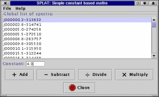
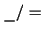

Next: The panner window
Up: Help for individual windows
Previous: The simple binary maths window

This window allows you to add, subtract, divide and multiply a
spectrum by a constant. To use it just select a spectrum in the
Global list of spectra: and enter the value you want in
the Constant: entry area.
Now select the operation you want to apply. A new spectrum called:
- Sum: (short name of spectrum) + (<constant>)
- Diff: (short name of spectrum) - (<constant>)
- Div: (short name of spectrum) 
(<constant>)
- Mult: (short name of spectrum) x (<constant>)
is created on the global list.
Next: The panner window
Up: Help for individual windows
Previous: The simple binary maths window
SPLAT - A Spectral Analysis Tool
Starlink User Note 243
Peter W. Draper
19 May 2004
E-mail:splat@star.rl.ac.uk
Copyright © 2001-2004 Council for the Central Laboratory of the
Research Councils